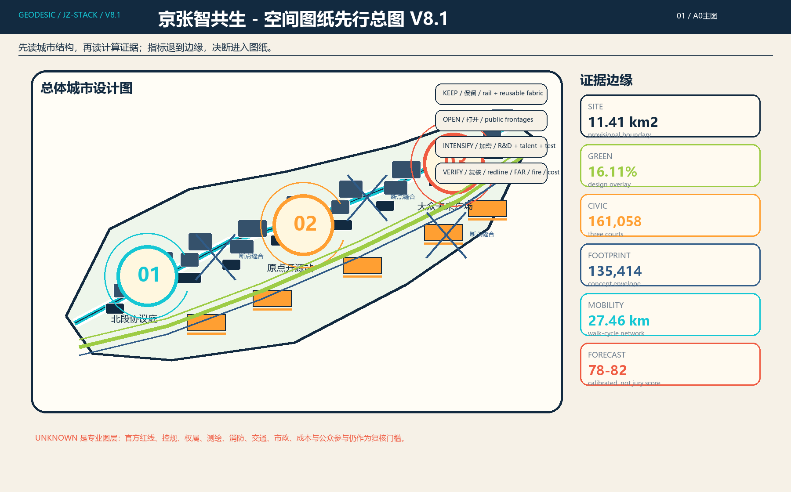
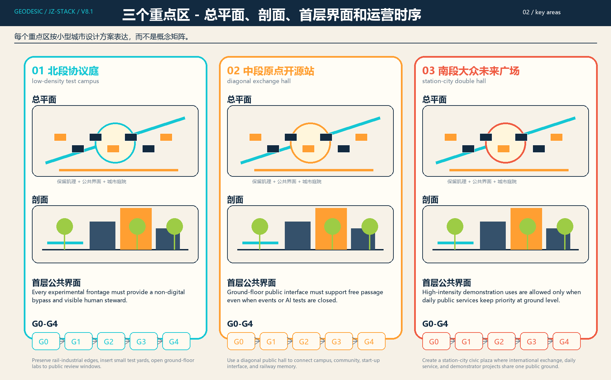
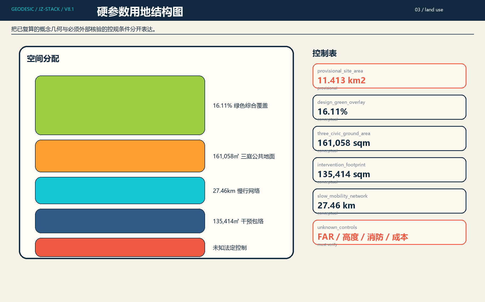
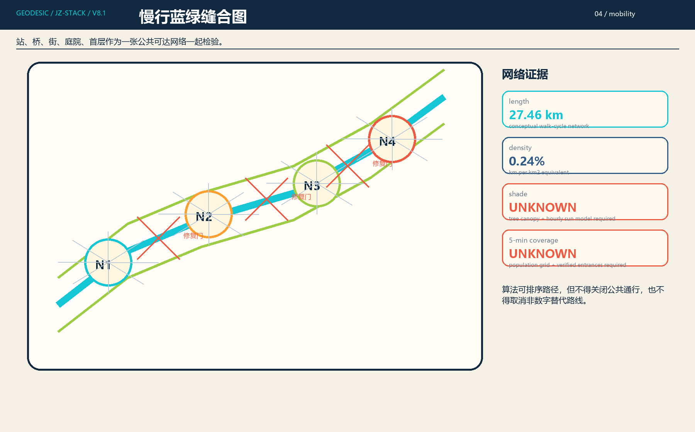
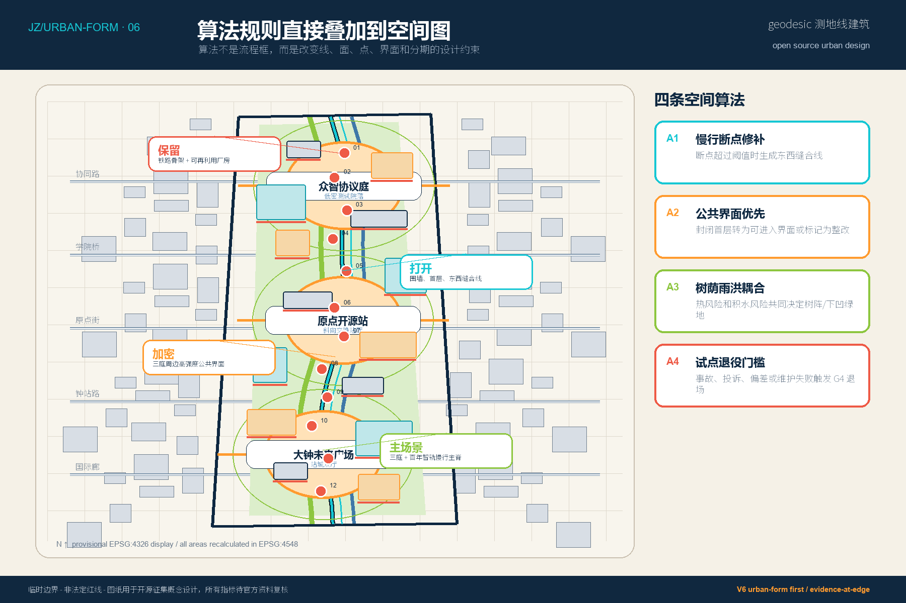
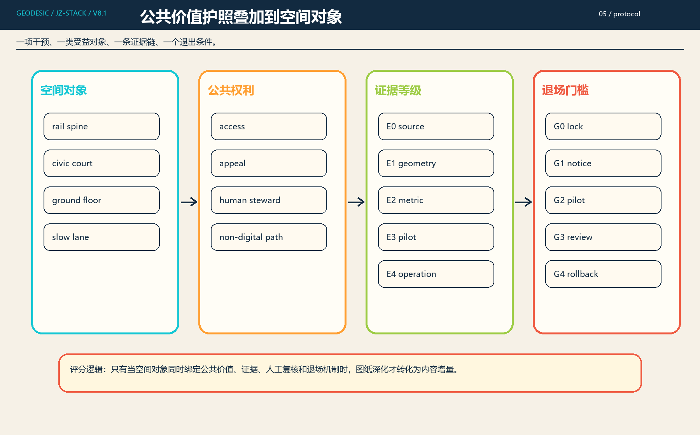

01 总体城市设计总平面
街区肌理、站城关系、建筑群落、公共界面和算法证据叠合，替代单纯概念证据图。
V8.1 按历史外部分数校准模型修复内容骨架：以 PR #709 的 78/100 为基线，恢复公共价值协议、第一性比选、数字化城市设计协议和硬规划参数，并将硬参数推进到 A0/A3 图纸。

街区肌理、站城关系、建筑群落、公共界面和算法证据叠合，替代单纯概念证据图。

总平面、剖面、首层界面、运营时序形成三个不同空间原型。

保留、打开、加密、生态织补四类动作直接落到街区和界面。

百年智轨慢行主脊、雨洪树阵和公共庭院组成可运营的公共场景。

算法规则不再独立成流程框，而是直接影响线、面、点、首层和分期。

把来源、假设、指标、退场和维护责任留在图纸边缘，作为证据层。
校准状态：CI、自检、双语和渲染完整只计入 gate readiness；V8.1 内容质量预测按历史外部分数校准为 78-82。临时边界仍不作为正式红线，缺失官方资料仍触发后续复算。